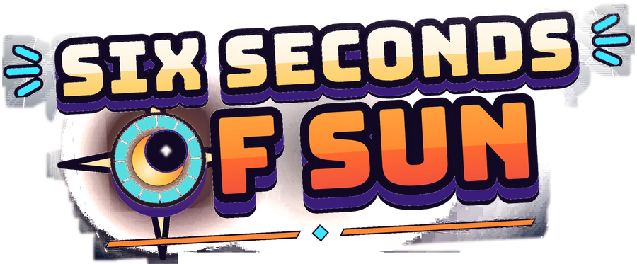
At the sixth hour of an endless eclipse, the great solar observatory has gone dark. You are the last Lightkeeper. Relight its chambers and restart the solar engine before the darkness becomes permanent.
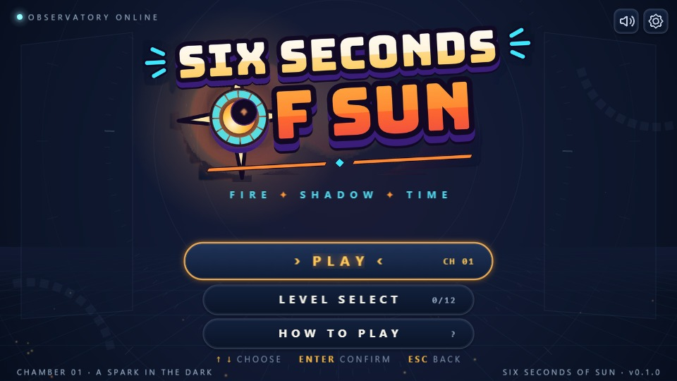
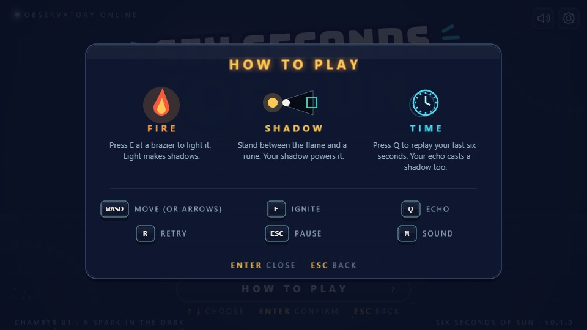
| In a chamber | |
|---|---|
| WASD or arrows | Move in 8 directions |
| E | Light the brazier you are standing next to |
| Q | Release your 6-second echo (from chamber 3) |
| R | Restart the chamber instantly |
| Esc | Pause: Resume · Restart · Chambers |
| M | Sound on / off |
| In menus | |
|---|---|
| ↑↓ or WS | Choose a button |
| Enter / Space | Confirm |
| Esc | Back / close a panel |
| Q / E | Chamber list: switch Campaign / Bonus page |
| V | Screen shake on / off |
| Mouse | Hover to select, click to confirm |
Every chamber is a sealed room with an exit gate. Open the gate, step into the portal behind it, and the chamber is cleared. Three ideas open every gate, and they work as one chain.
Stand next to a brazier and press E. The main beacon floods the room with light. No fire, no shadows.
Your body blocks the light and throws a shadow straight away from the flame. Put that shadow on a rune to power it.
Press Q and your last six seconds of movement become a looping cyan echo. Its shadow powers runes too.
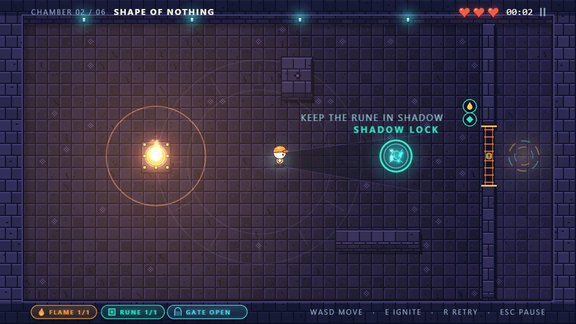
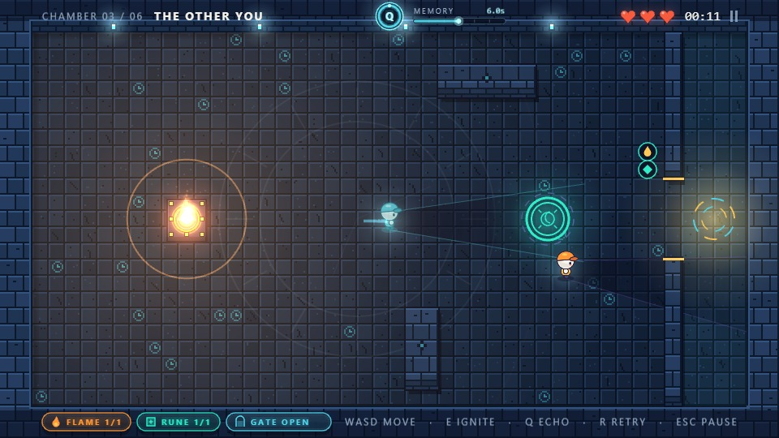
| Latching rune | Solid ring. Once powered it stays powered. |
| Continuous rune | Dashed outer ring. Only powered while a shadow is on it: hold it yourself, or leave your echo there. |
| The gate | Icons beside it show what it needs (flames, relays, runes). It opens when all are met and closes again if one is lost, unless you are standing in the doorway. |
| Top left | Chamber number and name. |
| Top centre | MEMORY ring around the Q key and seconds stored; the bar beside it shows where your echo is in its six-second loop. |
| Top right | Hearts, the chamber clock (it starts when you first move) and the pause sign. |
| Bottom left | Goal badges: FLAME lit, RUNE powered, GATE locked / open. They light up as you complete them. |
| In the room | An E key appears over a brazier you can light; short hints mark what to try next. |
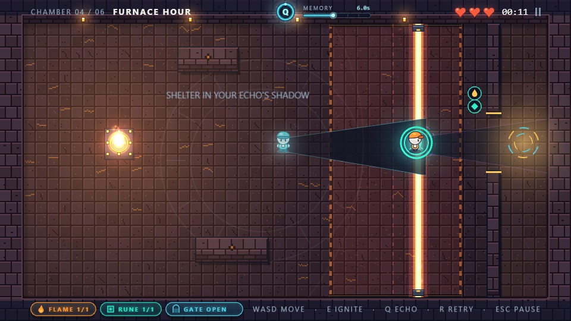
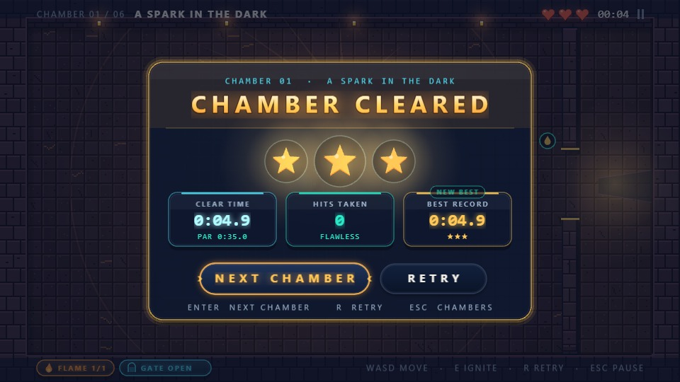
| Rating | How to earn it |
|---|---|
| ★★★ | Clear within the chamber's par time with no hits. |
| ★★ | Clear within 1.5 × par with at most one hit. |
| ★ | Any clear. |
Your best time and best stars are kept for every chamber; beating either shows NEW BEST.
Six campaign chambers teach one idea each, then combine them. Clearing chamber 6 plays the sunrise and opens six bonus chambers with new mechanics.
| # | Chamber | Par | What it teaches |
|---|---|---|---|
| 01 | A Spark in the Dark FIRE | 0:35 | Light the beacon with E; the gate opens. |
| 02 | Shape of Nothing SHADOW | 1:00 | Stand between flame and rune to lock it with your shadow. |
| 03 | The Other You TIME | 1:20 | One keeper cannot hold the rune and leave: let your echo hold it. |
| 04 | Furnace Hour FIRE | 1:35 | Park the echo on the rune, then shelter in its shade from the scanner. |
| 05 | Ashes and Angles SHADOW | 1:50 | Light a relay too, and match an angled shadow line. |
| 06 | Six Seconds of Sun SUN | 2:25 | The finale: sun core, two relays, two scanner lanes and your echo. |
| 07 | Twin Seals | Two seals that charge only while one shadow covers both (dotted link). |
| 08 | Shifting Stones | Sliding pillars cut your shadow short; charge in the gaps. |
| 09 | Lighthouse | A fire beam turns full circle; it stops at stone, so hide behind blocks. |
| 10 | Clockwork Order | Rune A holds for 3 seconds (amber ring); power B before it runs out. |
| 11 | Prism Hall | Light the flame, then the prism: its cone throws a second shadow at a new angle. |
| 12 | Echo Gauntlet | Two fast fire lanes: park an echo before each and cross in its shade. |
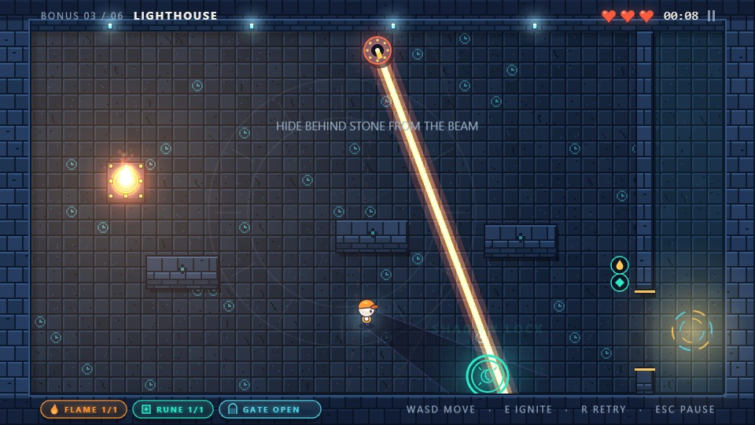
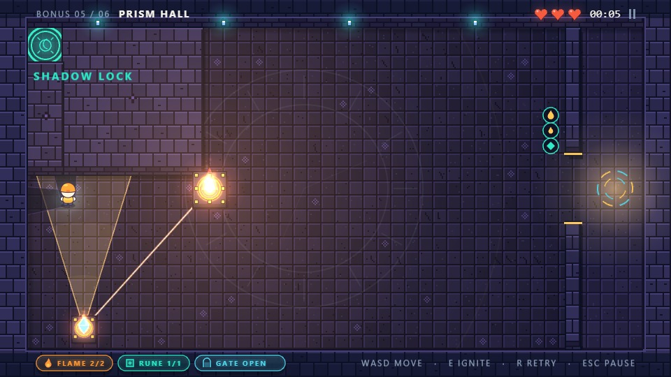
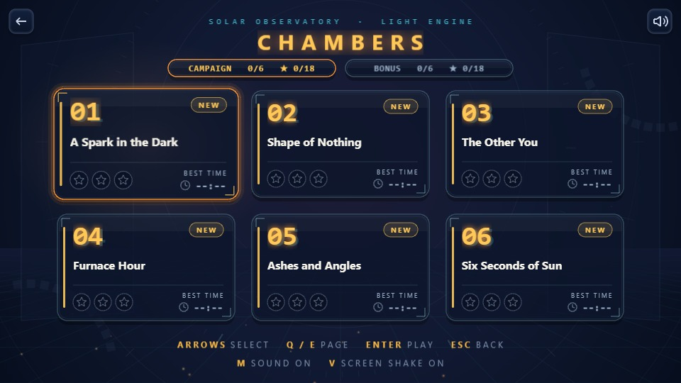
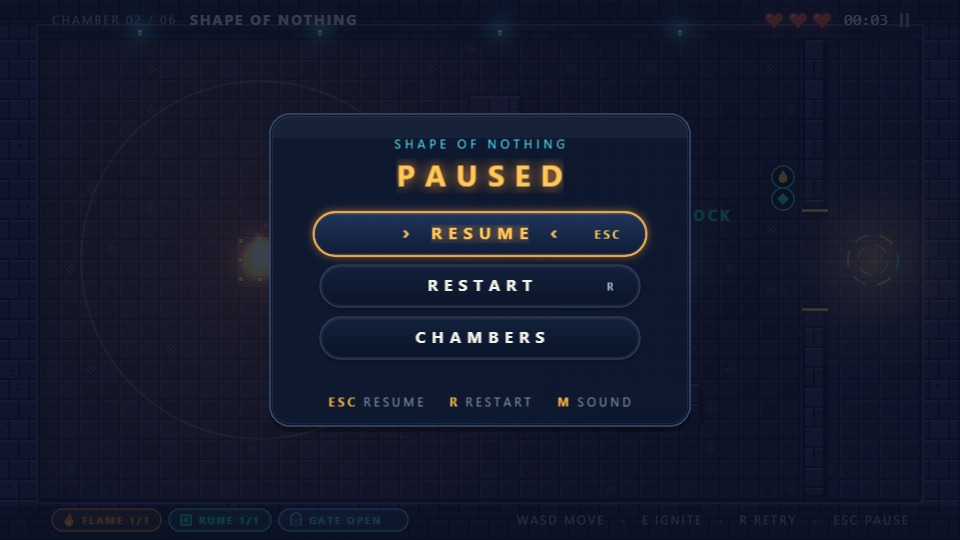
| No sound | Press any key or click the game once; check M and the speaker icon; make sure the browser tab is not muted. |
| Blank or black screen | The game switches to its Canvas renderer automatically if WebGL fails. You can force it by adding ?renderer=canvas to the address. |
| Choppy movement | Close other heavy tabs, and turn on hardware acceleration in the browser settings. |
| Game paused by itself | The window lost focus. Click the game and press Esc or choose RESUME. |
| Stuck in a puzzle | Press R to restart instantly; re-read the hint in the room; check the goal badges at bottom left. |
Why is Q not working? The echo unlocks in chamber 3, needs at least one second of memory, and has a short cooldown after each use.
Why won't the brazier light? Stand right next to it, until the E key appears above it. A prism takes light only after the main beacon is lit.
My shadow is on the rune but nothing happens. Hold it there a little longer, and check that the beacon is lit: no fire, no shadow.